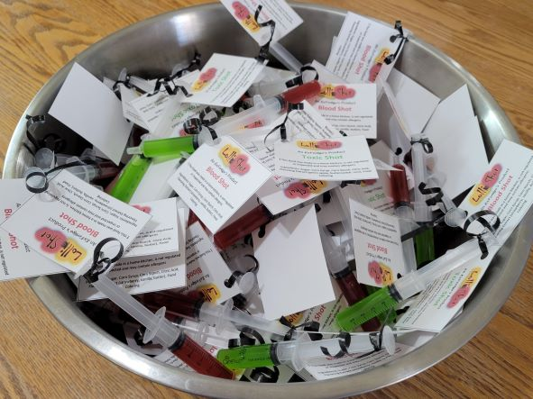

What's New at ExVertigo's?
Cowboy Christmas

On September 18th and 19th, we were lucky enough to be a part of the wonderful Cowboy Christmas event. We had so much fun meeting new people, chatting with other vendors, and sharing our product with everyone.
Halloween
We had such a blast making our Halloween Lolli-Shot. We renamed and recolored two flavors especially for the holiday. We decided on “Blood Shot”, a darker version of our Strawberry Cheesecake, and “Toxic Shot”, a lighter version of Butterscotched Apple.